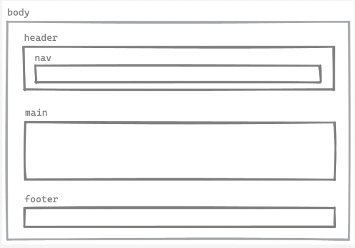

Website
I tema 2, Grundlæggende web, blev vi introduceret for basalt HTML og CSS. Vi blev også introduceret
for designprincipper
herunder gestaltlove, og procesdokumentation som moodboard, styletile, mockup, wireframe og
layoutdiagram.
I mobilsite opgaven fik vi udleveret materiale i form af billeder og tekst til indhold, og
wireframes og
layoutdiagrammer som kan ses til højre.
Jeg lærte at sætte et site op i grid, bruge media
querie til at lave et
responsivt
site, implementere billeder i koden, og style
sitet i css, bl.a. ved at bruge fonte, farver, forskellige overskrifter og knapper med
hoverfunktion.
Emnesite
Til emnesite opgaven skulle vi selv vælge hvad vores site skulle handle om, og designe mere
selvstændigt. Jeg brugte
moodboard og styletile i min designproces, til at indspore en klar ide til hvordan mit site skulle
ende med at se ud.
Jeg valgte at gøre brug af stilarten modernisme til mit site, og understilarten flat design til mine
billeder jeg har
lavet i illustrator.
Jeg valgte at mit site skulle være stringent og funktionelt, og gjorde bl.a. brug af kontrastfarver,
blå og orange, for
at skabe nogle klare linjer på mit site.
Jeg synes jeg har lykkedes med at lave et overskueligt, forudsigeligt og enkelt site, men hvis jeg
skulle lave noget om
ville jeg undgå at bruge caps i brødteksten, for en mere behagelig læseoplevelse.
Wireframe

Layoutdiagram
Moodboard
Mockup af side 2